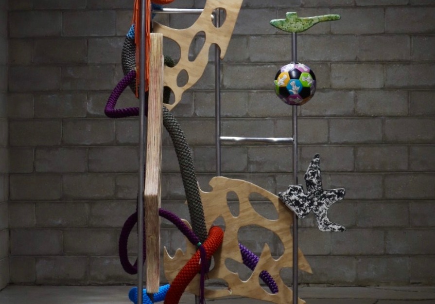

Noël Morical and Mat Mancini: Ringleader
Ringleader is a collaborative furniture design project by artists Noël Morical and Mat Mancini, forged at the intersection of sculpture, utility, and irreverent joy. Rooted in their independent studio practices, the duo merges Noël’s intricate macramé technique with Mat’s materially layered, collage-based approach to create hybrid objects that are as functional as they are fantastically whimsy.
The collaboration merges through a heart-to-heart between handcrafted and industrial construction. Noël’s use of richly colored paracord—knotted, braided, and tensioned—introduces a tactile softness and sculptural rhythm to the work. Her practice draws from the language of textiles and body adornment, reimagining traditional macramé within a contemporary design context. Chairs, tables, and lighting elements become vessels of texture and intimacy—each loop and knot a deliberate gesture toward intentional care and geometric complexity.
In parallel, Mat brings an eclectic material and cultural vocabulary drawn from cast forms, welded steel display systems, resin-infused prints, and 1990s pop-cultural motifs. Splicing structure with spirit, his practice grazes the edges of contemporary furniture’s conventions, guided by an irreverent yet lyrical sensibility. His surfaces feel both archival and futuristic—evoking suburban skate parks,color block fashion, Greco-Roman columns, and the visual clutter of mischievous, meaningful adolescence.
Together, their work percolates between design, sculpture, and play—producing objects that are performative, customizable, and unapologetically personal. Whether it’s a chair that functions like a stage prop or a lamp that behaves like a wearable artifact, Ringleader treats furniture as a site of experimentation: a place where memory, humor, tactility, and utility converge.